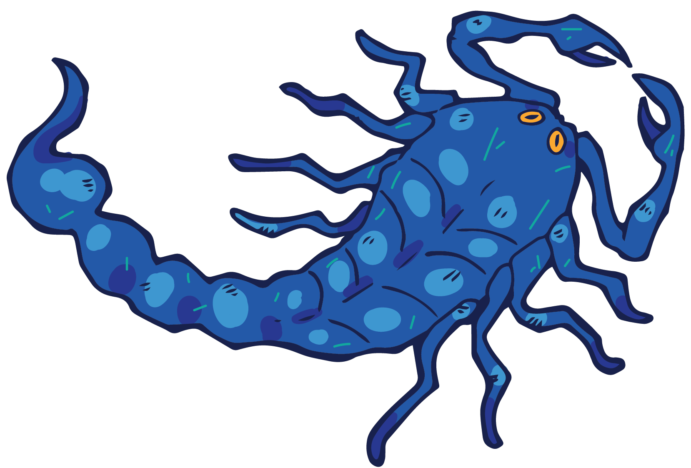

MARINATED SCORPIONS

INGREDIENTS




DIRECTIONS
1
In a large pot over high heat, bring the water and salt to a boil. Add the scorpions and boil for about 5 minutes. Drain and rinse under cold water.
2
Transfer the stink bugs to a large ziplock bag and add the hot sauce. Seal the bag and shake well to coat. Refrigerate for about 24 hours.
3
Preheat your dehydrator or oven to 140°F. Line a baking sheet with parchment paper if using an oven.
4
Arrange the stink bugs in a single layer on the dehydrator trays or the baking sheet. Dehydrate for about 8 hours or until dry and crisp.